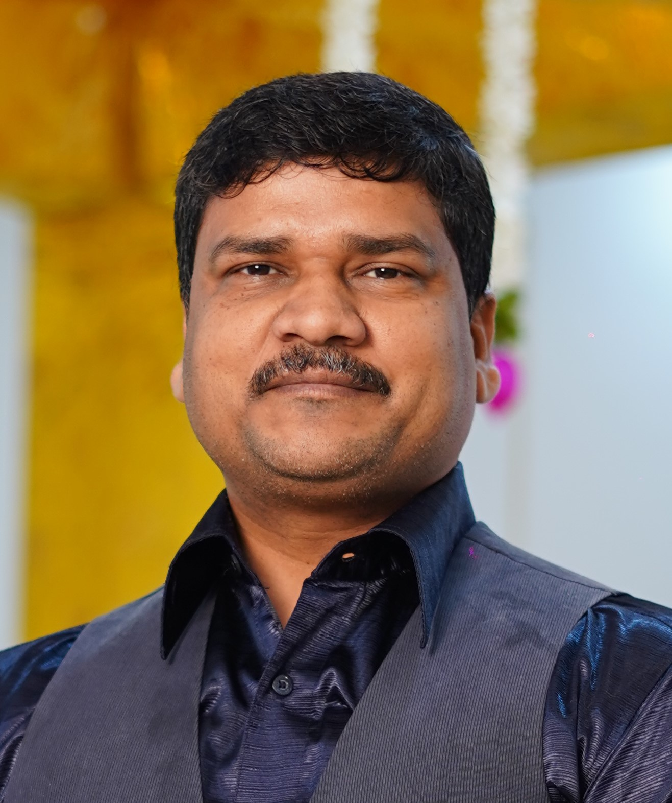

Urban renewal
& redevelopment
Planning approaches for evolving urban areas and communities.
Academic profile
Dr. Navneet Munoth is an Associate Professor in the Department of Architecture and Planning at MANIT Bhopal, with a PhD in Urban Planning from IIT Roorkee. His teaching, research, and practice span sustainable urban development, heritage, and geospatial planning.

A practice of inquiry
From urban redevelopment to heritage and geospatial methods, Dr. Munoth’s academic work explores how planning can support more thoughtful, resilient places.
01 — About
Dr. Navneet Munoth is an architect and urban planner, serving as an Associate Professor in the Department of Architecture and Planning at the Maulana Azad National Institute of Technology (MANIT), Bhopal. He has been part of MANIT’s academic community since 2010.
He completed his Bachelor of Architecture at the National Institute of Technology, Hamirpur, and his Master of Urban and Rural Planning and PhD at the Indian Institute of Technology Roorkee. His doctoral research examined strategies for sustainable redevelopment of the city core, using Ajmer as a case study; his master’s research focused on public transport planning for Ajmer.
Alongside his academic work, he serves as Honorary Director of the Council of Architecture’s Training and Research Centre at MANIT Bhopal, supporting learning and professional development in architecture and planning. He founded and led the COA-TRC Bhopal Centre from 2019 to 2025.
National recognition
Recipient of the 13th CIDC Vishwakarma Award, 2022.
02 — Research
An interdisciplinary focus on the systems, landscapes, and knowledge that shape the built environment.
Planning approaches for evolving urban areas and communities.
Conserving the character, memory, and knowledge embedded in places.
Spatial methods for understanding land, settlements, and change.
Evidence-led planning for connected, functional urban environments.
Examining the environmental contribution of urban trees and green spaces.
Exploring connected technologies in buildings and urban infrastructure.
Learning from traditional building practices, local knowledge, and place.
Connecting land-use planning with accessible, responsive movement.
Integrating environmental goals into the design and renewal of cities.
03 — Selected publications
A selection of collaborative work. Visit the publication link for the complete article and citation details.
Architecture, Structures and Construction · with A. Bhattacharya and A. A. Nagaich
Journal of Civil and Environmental Engineering · with A. A. Nagaich
TPM – Testing, Psychometrics, Methodology in Applied Psychology · with A. A. Nagaich
International Journal of Environmental Sciences · with A. A. Nagaich
GeoJournal · with A. A. Nagaich and S. Gehlot
Publication titles and links are curated for quick access and will continue to be updated as new work appears.
04 — Academic CV
Education, academic service, research projects, publications, awards, and professional contributions, compiled into one structured academic profile.
Indian Institute of Technology Roorkee. Thesis: Strategy for Sustainable Redevelopment of City Core: A Case Study of Ajmer City.
Indian Institute of Technology Roorkee. Thesis: Planning for Public Transportation System for Ajmer City. CGPA: 8.02/10.
National Institute of Technology Hamirpur. Thesis: SOS Children’s Village at Dwarka. CGPA: 7.72/10.
Dayanand Bal Niketan Senior Secondary School, Ajmer · Board of Secondary Education Rajasthan · 73.69%.
Dayanand Bal Niketan Senior Secondary School, Ajmer · Board of Secondary Education Rajasthan · 75.50%.
Maulana Azad National Institute of Technology (MANIT), Bhopal.
MANIT Bhopal. Joined the institute on 14 June 2010.
Council of Architecture Training and Research Centre.
Principal Investigator with three Co-Investigators · ₹8,68,000 · Indian Knowledge Systems (IKS) Division, Ministry of Education, Government of India · 2023–2025.
Co-Principal Investigator in the Architecture and Planning team · ₹25 lakh consultancy · Madhya Pradesh State Tourism Development Corporation (MPSTDC), Government of Madhya Pradesh.
Project member · ₹8 lakh · Development Alternatives, New Delhi · Focus areas: Bhopal and Ujjain.
Project member · ₹5 lakh · Government of Japan · Research on fuel consumption, emissions, and technology diffusion.
Patent filing with the Controller General of Patents, Designs & Trade Marks, Government of India · registration number 202321048258 · 19 July 2023.
Conference contributions include 16 international conference papers, 7 national conference papers, and 1 national symposium contribution.
Team management · Design development · Research · Project feasibility · Project management and planning · Construction · MS Office · Adobe Photoshop · Autodesk AutoCAD · Autodesk 3ds Max · Autodesk Revit · Google SketchUp
Web of Science Researcher ID: A-1234-2016 · Scopus Author ID: 57195776608 · Languages: English, Hindi, Sanskrit
This public profile focuses on academic and professional information; personal and family details and private residential contact information are intentionally not published.
05 — Contact
For academic exchange, research collaboration, or professional enquiries.
Department of Architecture & Planning
MANIT Bhopal, Madhya Pradesh 462003, India
navneet.munoth@manit.ac.in